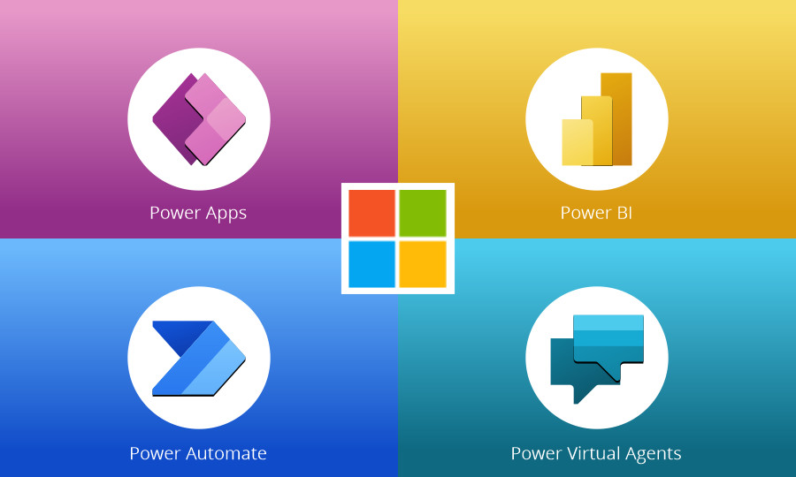

Low-Code Application Development Platforms
-

PowerApps is a platform created by Microsoft that allows users to build custom business applications with low-code, meaning less coding knowledge is required. It provides templates, components, and connectors to make application building faster and easier. It is suitable for business users, IT professionals, and developers, and can connect to various data sources. It is ideal for organizations that need custom business applications without extensive development resources. View Project
-

ServiceNow is a cloud-based platform that helps organizations manage and automate their business processes, including IT service management and business process automation. It is used by many large organizations and has a user-friendly interface and flexible customization options. View Project
-
Decisions is a no-code automation platform that simplifies business processes through workflows, rules, and integrations. It offers tools for creating Flows, Forms, and Dashboards, and supports use cases like Approval Tracking, Rule-Based Evaluations, and Document Processing. With seamless REST API integration and a web-based design compatible with browsers like Edge and Chrome, Decisions enhances efficiency and decision-making, making it a versatile solution for businesses. View Project